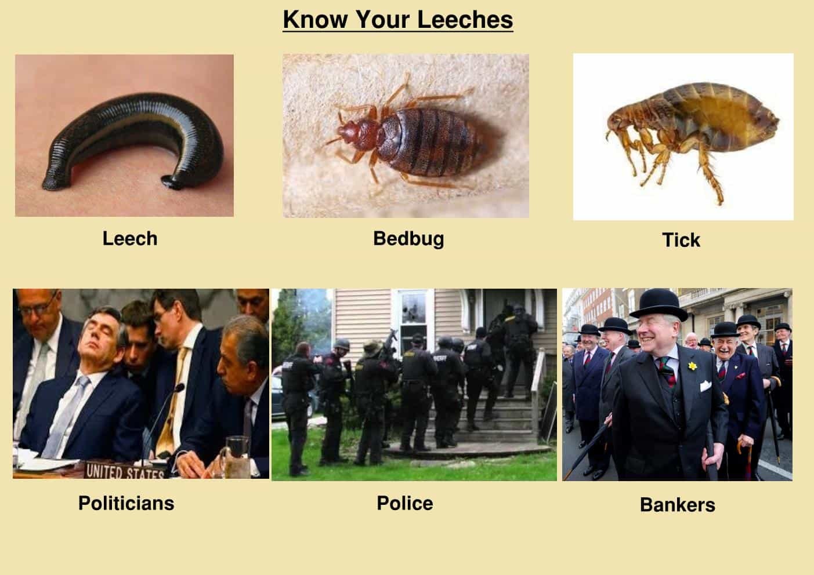

I was recently employed to survey the structure of an existing building in central London for the design company that I offer my services to as a structural engineer. This building was the host of a charity company that, and I quote: “exists to make this country a place where all the people have the same opportunities as everyone else. Until then, we’ll be here.”
Whenever I enter these kind of buildings, I like to get the feel of the environment and see what the drones are up to during their slave hours. From being greeted by a fake ass smile receptionist boy to being surrounded by hundreds of leaflets and posters that promote their object of work, I soon realized that my simple observation of the surroundings would turn into a frustrating experience.
A three-story office building entirely occupied by these jokers confirmed my guess that charities are one big scam for people to make easy money by doing nothing… nothing except being annoying with leaflets and smiles.
Being Approached On The Street To Have A Go At Your Hard-Earned Money
You know these guys. They approach you like some wanna be pick-up artist with the sole purpose of taking your money and putting it in their pockets. A charity that is run like a business is a sad, sad thing. When you see hundreds of people in big cities, all with special hoodies and fake smiles, you suddenly realize how much money is being wasted instead of actually helping those in need.
Charities Are Run Like A Big Corporation, Without The Downsides
These chuggers then return to their three-story corporate office building, but unlike other corporations where people actually slave away to produce something of worth, they just enjoy the perks and none of the downsides of the corporate life style. A charity that has its office in central London right next to the Tube station is a big thing.
Another perk that these jokers were enjoying was the professional expresso machines and big meeting rooms where young people were sitting around the table with their lattes in hand discussing over some pictures or a website. That has to be so stressful. Laughing and looking on their phones, these locusts manage to “work” by doing nothing and wasting the money of the gullible fools that actually do donate.
Probably some of the big philanthropists that do donate do it for the sake of being seen as generous individuals, not for the act itself. I guess they deserve it.
Still, there were several meeting rooms with people “working” doing nothing, and then the big offices with colorful badges and hoodies and bags and leaflets, where no one was doing any actual work. It was one big ass joke. And you could walk in and out without a problem. It isn’t even a secret anymore. It is the norm to spend charity money on nothing.
The Pareto Principle
This brings me to Pareto’s Principle. Apparently it is true. 20% of the population produces 80% of the goods. Yes, that means that 20% of us work to sustain the other 80%. And with the new wave of feminism and equality between everyone, it will be even worse. What is the percentage of white men in the world? 4%? Same with sex. 20% of the guys fuck 80% of the girls.
Like locusts, these kind of do-gooders decided one day that work is difficult stuff, and so charities were created. It is important for these charities to be approved and recognized by the general population via media influences, so that anyone who dares say anything about them ends up being lynched.
I had a friend. She was working for another charity company. Her directors earned hundreds of thousands of pounds per year. They set up their own salaries. Benefits and expensive trips were the norm. The internal organization was that of a corporation and the sole purpose was to bring in even more money, and while providing actual charity services to people in need, more than 70% of the funds were directed towards the “development” of the organization, salaries and benefits.
The Real Charities Out There

This takes me to another scam charity organization: the government. The parliaments are full of individuals who never work. They talk. And everything they do is to further a personal agenda, or a group’s agenda. Millions of pounds are wasted every month so that the needs of these individuals are met.
The military does nothing but pretend they exist to protect us. Big Pharma, the Masonic lodges, the activists, the feminists, the personal development gurus, and the Brussels Parliament Group all have one big thing in common: the people that are part of these groups do not like work, and so they have created their own organization that leeches of from the actual hard working people of this planet.
One of the biggest scams of the 21st century is perpetuated by another group of people who do not want to work, such as fake spiritual life coaches and personal development gurus, though there are some cases where the help they provide is genuine. The richest and proudest people should be the ones who produce the most vital and essential elements for our survival: food and shelter. All the other stuff we don’t need is simply a color of contrast.
Yet farmers are pushed out of the way and are struggling to keep up with their expenses. Countries like Greece, Spain, and Italy export the majority of fruits, vegetables and meat to the “rich” countries such as Germany and England. The charity countries like England, Germany, or Norway like to talk, to fill in paper work, to move bonds from here to there, and to exploit poorer countries that actually do work for a living.
You could say that the microcosm vs macrocosm relationship applies here as well. 20% of the countries produce for 80% of the other countries. Yet those 20% are poor and struggling.
Whether we like it or not, the more charities there are, the higher amount of working hours we, the 20%, have to put into to sustain everyone else.
Read More: Is Obese “Model” Tess Holliday Stealing Money From Domestic Violence Charities?